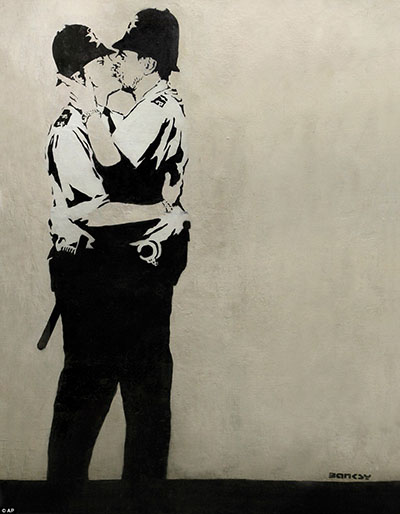
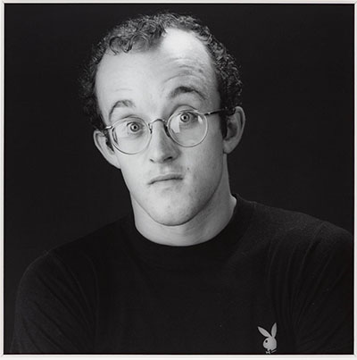
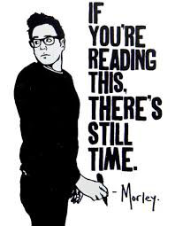
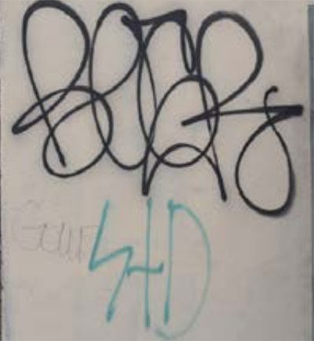
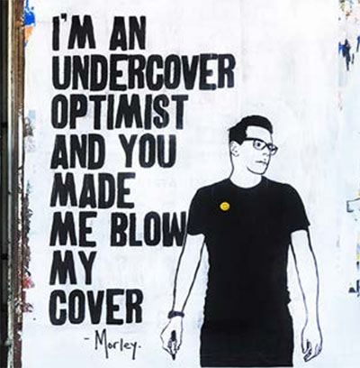
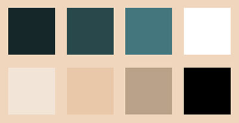

Street Art er kunst i gadebilledet, som alle kan se.
Der findes mange forskellige typer af Street Art: graffiti, stencil, tags og sticker art.
Graffiti startede helt tilbage i 1920’erne og 30’erne i New York, men blev først rigtig
populært i 1980’erne. Det var en periode med ungdomsoprør, hvor de unge tog
“kampen i egen hånd”.
Det resulterede i masser af graffiti og vild kunst i byen, som hurtigt fik respekt i de
voksnes
verden.
I nyere tid har synet på Street Art ændret sig meget. Dette kan fx ses på Roskilde festival, der har et særligt område med graffitikunst. Det gør at tidligere ukendte graffitikunstnere, nu kan blive kendte for det de laver. Flere kunstnere har også udgivet kunstværker og bøger på diverse udstillinger og publiceringer.
Derfor gik Street Art fra at være set som noget beskidt og ulovligt, til at være rigtig kunst.
Generelt når man taler om kunst og stilarter, lægger man fokus på særlige kendetegn
som værkerne har til fælles. Men det kan man ikke med Street Art.
Street Art er nemlig et væld af forskellige udtryk: Fede graffiti bogstaver, stencils i sort/
hvid, farverige canvasser og meget mere.
De enkelte stilarter i Street Art kan derfor karakteriseres individuelt, men som en helhed
er der ikke noget kendetegn, men skal ses som en hyldest til den forskellighed,
der er i samfundet.
Street Art har ofte noget på hjertet, og det handler om mange forskellige emner; det kan være alt fra politik og religion, til frihed og bandekonflikter, og forbudt kærlighed og miljøproblemer. Det bliver til mange forskellige kunstværker i byer verden over.
Banksy er en kendt, men ukendt kunstner! Ingen ved hvem han/hun er, men en kunstner under navnet har i en lang årrække lavet meget politisk Street Art verden over. Det er nok noget af det aller mest berømte Street Art, og det er ofte lavet som Stencils, nogle gange også med tekst til.
Banksy er en street artist, som er kendt for sine kontroversielle og ofte politiske tematiserede kunstværker. Banksy’s værker er karakteriseret af slående billeder, som ofte er kombinerede med et slogan. Hans arbejde inkluderer ting som satirisk kritik af krige, kapitalisme, hykleri samt grådighed. Der bliver I denne forbindelse, ofte benyttet illustrationer af rotter, aber, politimænd, medlemmer af den royale familie og derudover børn. Udover hans todimensionelle arbejde, er Banksy kendt for hans installationskunst. En af de mest hyldede af disse kunstværker, var da han malede direkte ovenpå en levende elefant med et Victoriansk tapet mønster, som skabte en del oprør blandt dyreaktivisterne.
Keith Haring var en amerikansk kunstner, som
startede med at lave tegneserieagtig
kunst i
New Yorks bybillede, særligt i Subwayen.
Hans tegninger var med til at ophøje selv små
tegneseriefigurer til noget man vil kalde rigtig
kunst
.
De var både sjove og seriøse, og handlede om
vigtige emner som køn og AIDS, rige/fattige, og
racekonflikter.
Haring var inspireret af graffiti og vakte omkring 1980 opsigt med sine kridttegninger i New Yorks undergrundsbane. Hans tegninger var enkle, og han malede dusinvis af tegninger om dagen foran folk som kom for at se ham. Haring banede vej for, at tilsyneladende enkle og ligefrem tegneserieagtige elementer af selvlærte eller mindre uddannede kunstnere kunne blive bredt værdsat. Senere spredte hans kunst sig til alt fra offentlige vægmalerier og natklubber til gallerier og museer over hele verden.
Morley er en af de nyere gadekunstnere, som er blevet berømt for det han laver. Han arbejder ikke lige så politisk som de to andre kunstnere vi har nævnt, men vil hellere fokusere på at sprede glæde i byen! Han har selv udtalt, at han gerne vil virke som en ukendt ven for alle dem som ser hans kunst, og han vil gerne gøre verden til et gladere, bedre sted.
Morleys værker er blevet vist i The Los Angeles Times, The Huffington Post, LA Magazine, TheChive.com, LA Canvas og på netværker såsom ABC, CBS, Comedy Central, Discovery Channel, Amazon og Showtime. Det seneste han har arbejdet på er hans bog (”If You´re Reading This, There Is Still Time”) som han også var på tour med.
Tagging er den simpleste graffiti type. Den består af kunstnerens gadenavn i en enkelt farve, og er kort fortalt kunstnerens signatur. Tags laves med spraymaling, markers eller pens, og det anses for ekstremt respektløst at male henover en anden kunstners tag. Det karakteristiske ved Tags er den enkelte udførsel, et ord skrevet i én farve, med enten hårde eller bløde linjer. Tags er ofte noget der skal kunne laves hurtigt, og er derfor simple i designet.
Wildstyle er en vild og pyntet form for graffiti skrift. Det er en svær og meget
stylet
form for skrifttype, som kan være svær at læse for ikke-graffitikunstnere
,
men som er meget flot og kreativ. Wildstyle er ofte lavet i 3D, med mange skygger og farveovergange.
Fordi det stadig er ulovligt at lave Street Art langt de fleste stedet, så har kunstneren ofte er særligt budskab på hjerte, fordi der er noget på spil.
Blandt de mest populære emner kan man nævne: Miljø og klima, samfundskritik (politiske emner generelt!), værker med humor, Tags som viser hvilken bande man hører til, og til sidst kunst for kunstens skyld - noget der er flot og farverigt, som er lavet for at gøre storbyen smukkere.
Da Street Art er meget bredt kan man nærmest ikke tale om Street Art som en helhed, men visse ting går igen og underkategorier inden for Street Art kan man godt fortælle om.
En generel ting for Street Art er kontraster og omrids som gør det nemmere at se hvad kunstværket skal forstille.
Kigger man på f. eks Stencils er der dog et klart farvetema. Stencils vil meget ofte være sort/hvid som blandt andet ses hos Banksys værker.
Kompositionen variere meget i Street Art. Der både er realistiske 3D mallerier og graffiti som er lavet hurtigt med én farve. Kunstneren har frie tøjler.
Video tutorial på Lynda
https://www.youtube.com/watch?v=mQURCU6jN58
Endless Canvas
http://farm8.staticflickr.com/7228/7174945513_59d3b2c048_b.jpg
Fandom
https://vignette4.wikia.nocookie.net/wam/images/8/88/Elaborate_Tag.jpg/revision/latest?cb=20151205201032
High Snobiety
http://static.highsnobiety.com/wp-content/uploads/2016/07/27121054/morley-artist-04.jpg
Pinterest
https://s-media-cache-ak0.pinimg.com/originals/82/30/db/8230db546a217b9a2b7313e82eec88c3.jpg
https://s-media-cache-ak0.pinimg.com/originals/6c/30/a6/6c30a6b7db- 75055354cb02c8d4d7d694.jpg
https://i.pinimg.com/736x/f0/93/5f/f0935faee57ea6a9adb74a9515c-2c0f5--popart-form.jpg
https://i.pinimg.com/originals/a7/cc/f5/a7ccf52c9f927c6dc4501b349a3ba6e4.jpg
Lifehack
http://cdn-media-2.lifehack.org/wp-content/files/2014/07/article-
2604232-0703026C00000514-183_964x1239.jpg
Logan Squarist
https://logansquarist.com/wp-content/uploads/2015/12/IMG_1762.jpg
Tumblr
https://static.tumblr.com/ac38b41a9c09501fd6088b306eb9cd84/h4asoaz/fbqn215du/tumblr_static_streetart.jpg
Urban Art Association
http://s1295.photobucket.com/user/TheOutsidersGalleries/media/morley-print-1200_zps225fa2a1.jpg.html
What’s New on the News
http://relacionesinternacionales.media/wp-content/uploads/2016/05/1_030416011403.jpg
Tate
http://www.tate.org.uk/art/images/work/AR/AR00207_10.